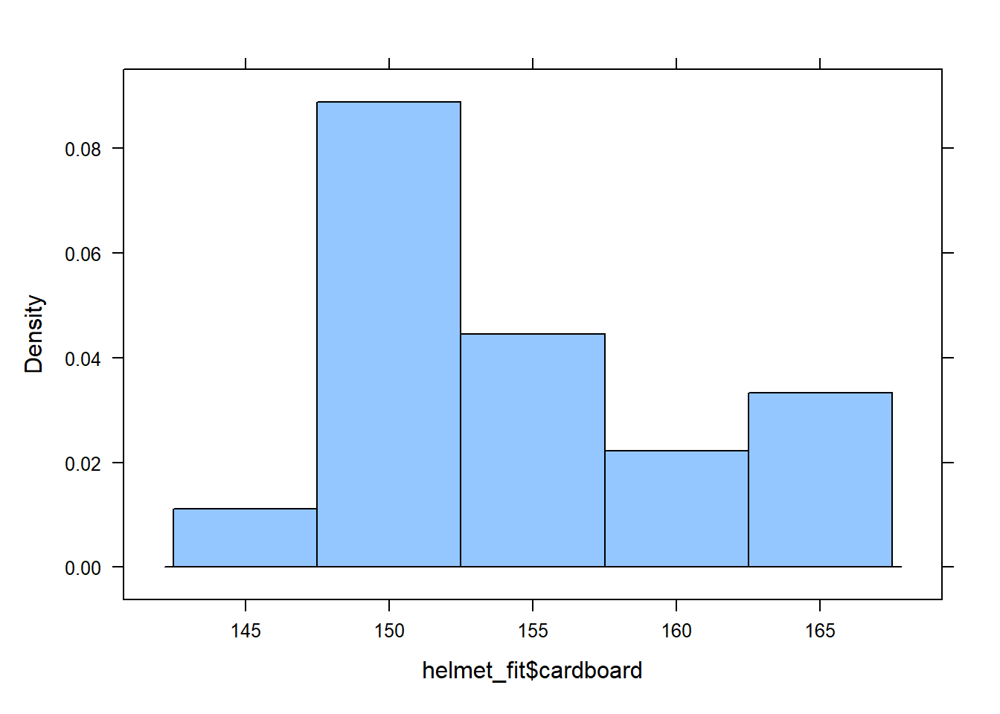
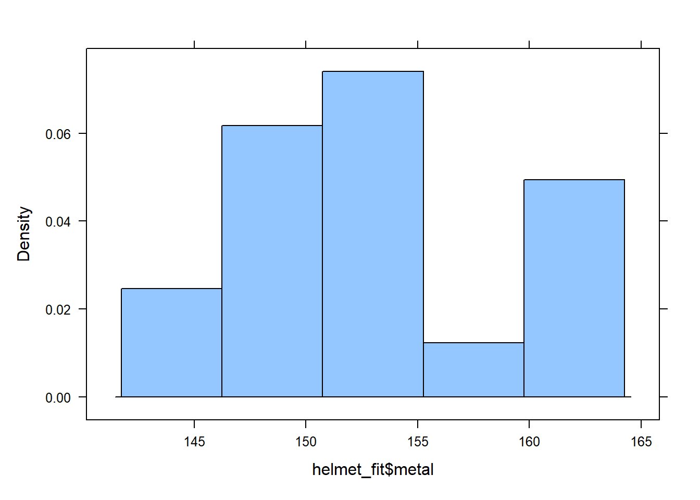

Here are several opportunities to practice analyzing dependent samples using R. For each question, you will:
Read in data
Create data summaries (numerical and graphical)
Statistically analyze the data
Check for the suitability of the statistical test (CLT, Normality)
State your hypothesis test conclusions and interpret your confidence intervals
Helmet Measurements
After purchasing a batch of flight helmets that did not fit the heads of many pilots, the NZ Airforce decided to measure the head sizes of all recruits. Before this was carried out, information was collected to determine the feasibility of using cheap cardboard calipers to make the measurements, instead of metal ones which were expensive and uncomfortable.
The data lists the head diameters of 18 recruits measured once using cardboard calipers and again using metal calipers. One question is whether there is any systematic difference between the two measurement tools.
Create histograms and summary statistic tables for the measurements for each type of tool:
histogram(helmet_fit$cardboard)

histogram(helmet_fit$metal)

Step 3: Prepare the data for analysis
Give the summary statistics (favstats()) for the differences in the measured head diameters.
Question: What does a negative number mean given the definition of the difference? Answer: That means the metal measurement is higher than the cardboard one.
The QQPlot graph shows this distribution is normal distributed.
Step 4: Perform the Appropriate Analyses
Hypothesis Test
Make the following null and alternative hypothesis correct by deleting what doesn’t belong:
\[H_0: \mu_d = 0\]
\[ H_a: \mu_d > 0\]
# Perform a t-test for the mean of the differences between cardboard and caliper datat.test(hel_diff, mu =0, alternative ="greater")
One Sample t-test
data: hel_diff
t = 3.1854, df = 17, p-value = 0.002707
alternative hypothesis: true mean is greater than 0
95 percent confidence interval:
0.7312591 Inf
sample estimates:
mean of x
1.611111
Question: What is the value of the test statistic, \(t\)? Answer: 3.1854
Question: How many degrees of freedom does this test statistics have? Answer: 17
Question: What is the P-value? Answer: 0.002707
Question: Can we trust this P-value? (eg. How many differences in our sample? Check the qqPlot() of the differences for normality) Answer: Yes, since the qqPlot shows the distribution is very close to normal distribution.
Question: State your conclusion about the hypothesis test. Answer: The p-value is very small, so I reject the null hypothesis.
Confidence Intervals
Create a 95% confidence interval for the true average difference between the cardboard and the metal measurement tools:
Question: Give a one-sentence explanation of your confidence interval. Answer: I’m 95% confident to suggest the true average of the helmet difference is located between somewhere in 0.5440163 and 2.6782060.
Cholesterol
A study was conducted at a major northeastern American medical center regarding blood cholesterol levels and heart-attack incidents. A total of 28 heart-attack patients had their cholesterol levels measured two days after the heart attack and again four days after the heart attack. Researchers want to see if cholesterol levels reduced significantly four days after the attack versus two days after the attack.
One Sample t-test
data: chol_diff
t = 3.2189, df = 27, p-value = 0.001669
alternative hypothesis: true mean is greater than 0
95 percent confidence interval:
10.96418 Inf
sample estimates:
mean of x
23.28571
Question: What is the value of the test statistic, \(t\)? Answer: t = 3.2189
Question: How many degrees of freedom does this test statistics have? Answer: df = 27
Question: What is the P-value? Answer: p-value = 0.001669
Question: Can we trust the P-value? Answer: Yes, since the qqPlot shows the distribution is normal.
Question: State your conclusion about the hypothesis test. Answer: Because the p-value is low, I reject the null hypothesis.
Confidence Interval
Create a 95% confidence interval for the difference in cholesterol scores:
Question: Explain your confidence interval in context of the research question Answer: I’m 95% confident to suggest the true cholesterol index difference, in average, is between 8.442836 and 38.128593 higher in day2 than day4.